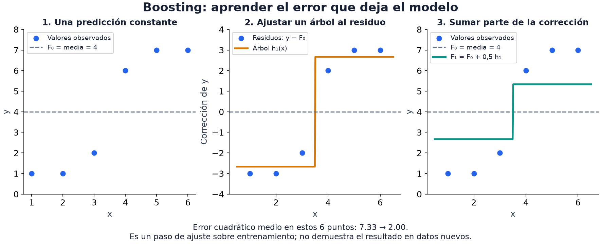

07 · Ensambles y gradient boosting
Nivel 1 — El piso · Ruta de Aprendizaje
Un árbol decide mediante preguntas sobre las columnas. ¿Qué cambia si varios árboles discrepan? Podemos promediar sus respuestas, o construir cada árbol para corregir lo que los anteriores todavía hacen mal. Esas dos ideas dan lugar a bagging y boosting: dos formas de combinar modelos, llamadas ensambles.
Por qué combinar modelos
Imagina varios árboles que estiman el precio de una casa. Uno predice demasiado alto porque vio pocas casas pequeñas; otro, demasiado bajo porque su muestra incluyó un barrio barato. Al promediar, esos errores pueden compensarse. Si todos ignoran el barrio, en cambio, el promedio conserva ese error compartido.
Un árbol muy profundo puede ajustarse a detalles accidentales de sus datos. Combinar árboles diversos ayuda a reducir esa sensibilidad. En tablas como las del módulo 06, un bosque y un modelo de boosting son comparaciones útiles junto a la regresión y al árbol individual.
Bagging: muchos árboles en paralelo
Bagging crea varias muestras del conjunto de entrenamiento con reemplazo: una fila puede aparecer varias veces en una muestra y faltar en otra. Entrena un modelo en cada muestra. En regresión promedia sus predicciones; en clasificación puede combinar votos o probabilidades. El random forest de scikit-learn promedia las probabilidades que producen sus árboles.
Random forest agrega diversidad: al buscar cada corte considera un
subconjunto aleatorio de columnas. Así, una columna muy predictiva no decide
siempre todas las primeras preguntas. Este fragmento supone X_train con una
fila por ejemplo y y_train con su clase:
# bloque: fragmento
from sklearn.ensemble import RandomForestClassifier
modelo = RandomForestClassifier(n_estimators=300, random_state=0, n_jobs=-1)
modelo.fit(X_train, y_train)Llamamos varianza a cuánto cambia el modelo cuando cambia su muestra de entrenamiento. Promediar modelos cuyos errores no coinciden puede reducirla. No requiere que cada árbol sobreajuste, ni corrige por sí solo datos mal etiquetados o una validación con fuga.
Más árboles suelen estabilizar la predicción, pero no garantizan que suba
la métrica en un conjunto finito: una votación puede cambiar y perder un
acierto. n_estimators=300 es un punto de partida, no una garantía; compara
validación, profundidad, tamaño mínimo de hoja y costo.
Boosting: muchos árboles en secuencia
Boosting construye una suma paso a paso. Para verlo, toma una regresión con
error cuadrático: primero predice la media de y; después calcula lo que falta
para llegar a cada valor observado. Ese residuo es y − predicción.
El siguiente árbol aprende a predecir residuos, y una fracción de su respuesta
se suma al modelo anterior.

En el primer panel, la predicción es 4 para todos. Para el primer punto, cuyo
valor es 1, falta una corrección de 1 − 4 = −3. En el panel central, un árbol
con un único corte resume esas correcciones: aproximadamente −2.67 a la
izquierda y +2.67 a la derecha. El último panel suma la mitad de esa
corrección: las nuevas predicciones son 2.67 y 5.33. El error baja en estos seis
puntos; todavía falta medir qué ocurre con puntos nuevos.
Esa fracción es el learning rate o tasa de aprendizaje. A diferencia del bosque, aquí los árboles no se entrenan de forma independiente: cada uno depende de la suma anterior. Con otras pérdidas, como la de clasificación, la corrección se obtiene a partir de su gradiente; el módulo 10 explica esa idea.
Un modelo demasiado simple puede equivocarse sistemáticamente: eso es sesgo. Agregar correcciones permite describir relaciones más complejas y reducirlo. Continuar también puede ajustar ruido. En el fragmento siguiente, early stopping detiene el proceso si una validación interna deja de mejorar.
# bloque: fragmento
from sklearn.ensemble import HistGradientBoostingClassifier
modelo = HistGradientBoostingClassifier(
max_iter=500, # iteraciones como techo...
learning_rate=0.1, # ...cuánto aporta cada uno
early_stopping=True, # ...y cuándo parar de verdad
validation_fraction=0.15,
random_state=0)
modelo.fit(X_train, y_train)
print("iteraciones que usó:", modelo.n_iter_)n_iter_ cuenta las iteraciones realizadas; en clasificación multiclase una
iteración puede incorporar varios árboles. Alcanzar max_iter solo indica
que se agotó ese techo: la curva de validación ayuda a decidir si continuar.
Parar antes tampoco prueba que los demás hiperparámetros sean adecuados.
validation_fraction=0.15 aparta datos de entrenamiento para esa decisión.
En una tarea temporal o con grupos, esa partición interna aleatoria puede no
representar el futuro que interesa predecir. La validación externa del módulo 05
sigue siendo necesaria para comparar modelos.
La receta completa, con el porqué de cada opción, está en Gradient boosting tabular.
Una implementación para experimentar
HistGradientBoosting viene en scikit-learn. Agrupa valores numéricos en
intervalos al buscar cortes, lo que reduce el trabajo respecto de revisar cada
valor distinto. También admite nulos numéricos y, como otros árboles, no necesita
estandarizar las columnas para decidir sus cortes.
Las categorías de texto necesitan un tratamiento explícito: convertirlas a
categorías admitidas o usar una codificación ajustada con train. Las librerías
xgboost, lightgbm y catboost ofrecen otras implementaciones; su disponibilidad
y la versión permitida se comprueban en el entorno de cada tarea.
Tres hiperparámetros que interactúan
| Parámetro | Qué hace | Cómo moverlo |
|---|---|---|
learning_rate | cuánto aporta cada árbol | menor aporte por iteración; suele exigir más árboles. Compara 0.1 y 0.05 si sobra tiempo |
max_iter | techo de iteraciones | examina si la validación aún mejora al acercarse al techo |
max_depth / max_leaf_nodes | profundidad o número de hojas | árboles mayores describen más detalles; compara ganancia en train y validación |
Y la relación que hay que tener clara: learning_rate y número de árboles
interactúan. Bajar el learning rate suele requerir más iteraciones, pero no
hay una equivalencia exacta ni una mejora asegurada. Mide puntaje y tiempo en
la misma validación; el presupuesto limita qué configuraciones puedes probar.
El puente hacia imágenes, textos y audio
Un encoder transforma un objeto, como una imagen, en un vector de números. Si ya fue entrenado, podemos usar esos vectores como columnas de una tabla y entrenar boosting encima. Es el patrón de 12 - Embeddings.
El modelo pequeño aprende a usar una representación ya disponible. Esto puede ahorrar el costo de adaptar toda una red, aunque extraer los vectores también consume tiempo. Su calidad depende de cuánto conserve el encoder de la señal que necesita nuestra tarea.
⚠️ Las tres trampas
1. Confundir estabilidad con garantía. Agregar árboles a random forest suele reducir la variabilidad, pero su accuracy puede bajar en validación. En boosting también puede aumentar el sobreajuste con más iteraciones. Compara con un split fijo y evita elegir por una diferencia mínima de una sola corrida.
2. Una importancia no demuestra una causa. En random forest,
feature_importances_ resume cuánto ayudaron las columnas a reducir impureza
al construir los árboles. Puede favorecer columnas con muchos cortes posibles.
La importancia por permutación pregunta cuánto empeora una métrica al barajar
una columna en datos reservados. Es otra medida útil, pero columnas redundantes
pueden ocultar mutuamente su importancia. HistGradientBoosting no ofrece el
mismo atributo feature_importances_.
3. Una semilla da reproducibilidad, no certeza. Fijar random_state
permite volver a una corrida y comparar cambios con menos fuentes de azar.
Repetir con otras semillas o particiones ayuda a distinguir una mejora estable
de una diferencia pequeña debida a la muestra.
🏋️ Práctica
| # | Ejercicio | Fuente | Qué practica |
|---|---|---|---|
| 1 | Titanic: random forest vs. boosting vs. logística, misma validación | Kaggle | comparar familias sin suponer una ganadora |
| 2 | House Prices: prepara categorías y usa HistGradientBoostingRegressor con nulos numéricos | Kaggle | la ventaja de los nulos, en vivo |
| 3 | ⭐ Playground Series del mes | Kaggle Playground | leaderboard real, datos tabulares, sin presión |
| 4 | Widget Corp (IOAI 2024): 187×8 por muestra, con etiquetas corrompidas | .zip oficial | features de una matriz + ruido de etiquetas |
| 5 | Barre learning_rate en {0.3, 0.1, 0.05, 0.01} y mide tiempo y puntaje | Gradient boosting tabular | el compromiso presupuesto/calidad |
En Widget Corp, tanto representar la matriz como lidiar con etiquetas corrompidas puede importar más que agregar árboles. Permite explorar hasta dónde llega un ensamble cuando la señal de entrenamiento es imperfecta.
🎯 Mini-desafío (formato IOAI)
Tarea: Widget Corp (IOAI 2024, at-home ML). Clasificar en Ruby o Sapphire desde un arreglo 187×8 por muestra. Métrica: accuracy. Baseline a superar: el Baseline trivial (clase mayoritaria) calculado por ti, porque esta tarea no publica uno.
Una exploración posible es resumir cada uno de los 8 «hilos» con media, desviación, mínimo, máximo y energía, como en Features de ventana deslizante. Compara esos resúmenes con conservar la matriz aplanada: al resumir ganas compacidad, pero puedes perder el orden de los valores. Calcula la clase mayoritaria usando train y compara ambos modelos en la misma validación.
Para explorar
Entrena bosques con 1, 2, 10 y 100 árboles sobre el mismo split. ¿Qué cambios pequeños de votación explican que la accuracy no crezca siempre?
Compara dos curvas: puntaje frente a número de árboles y puntaje frente a segundos. Elige una configuración para un presupuesto corto y otra para uno largo; pueden ser distintas sin que ninguna sea universalmente mejor.
← 06 - Modelos clásicos · Ruta de Aprendizaje · 08 - Sin etiquetas →